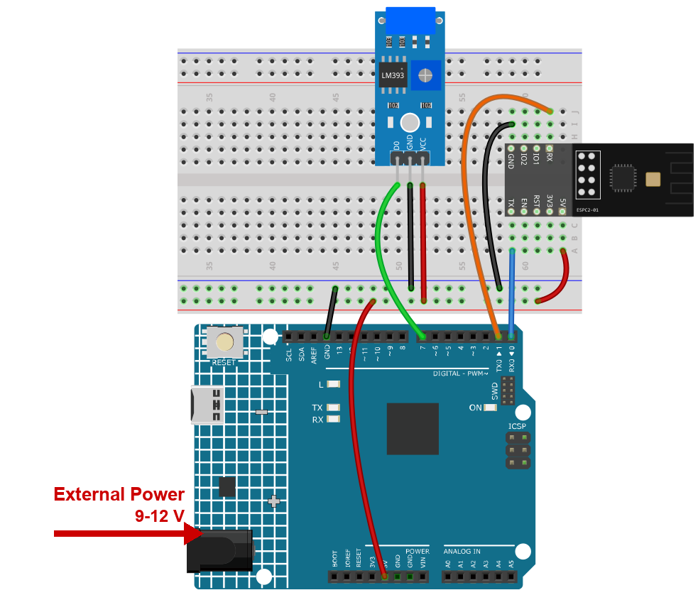
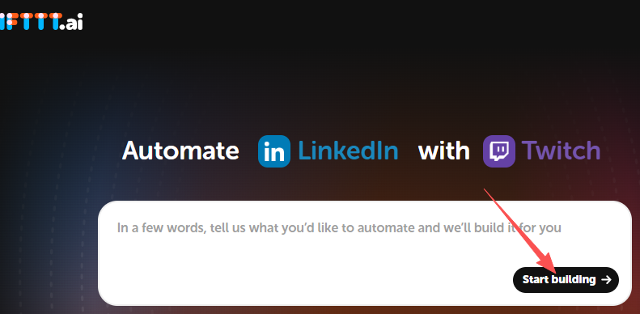
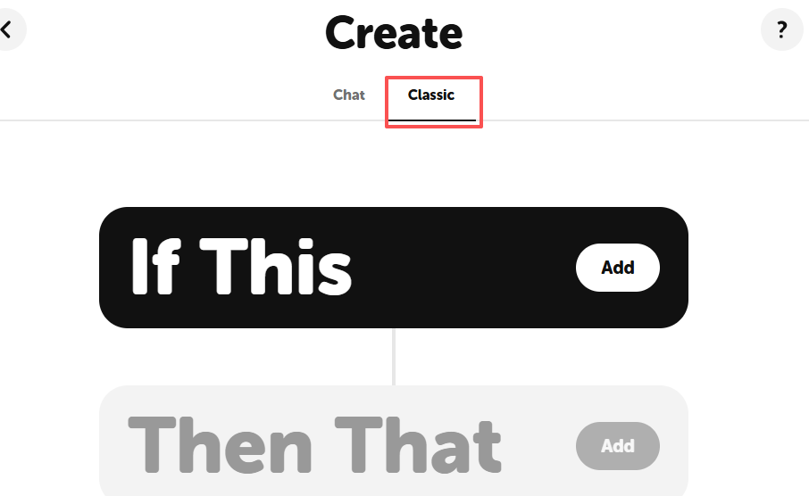
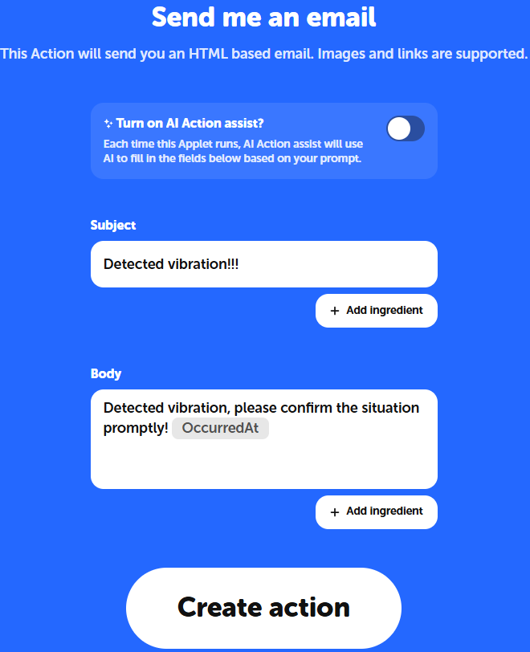
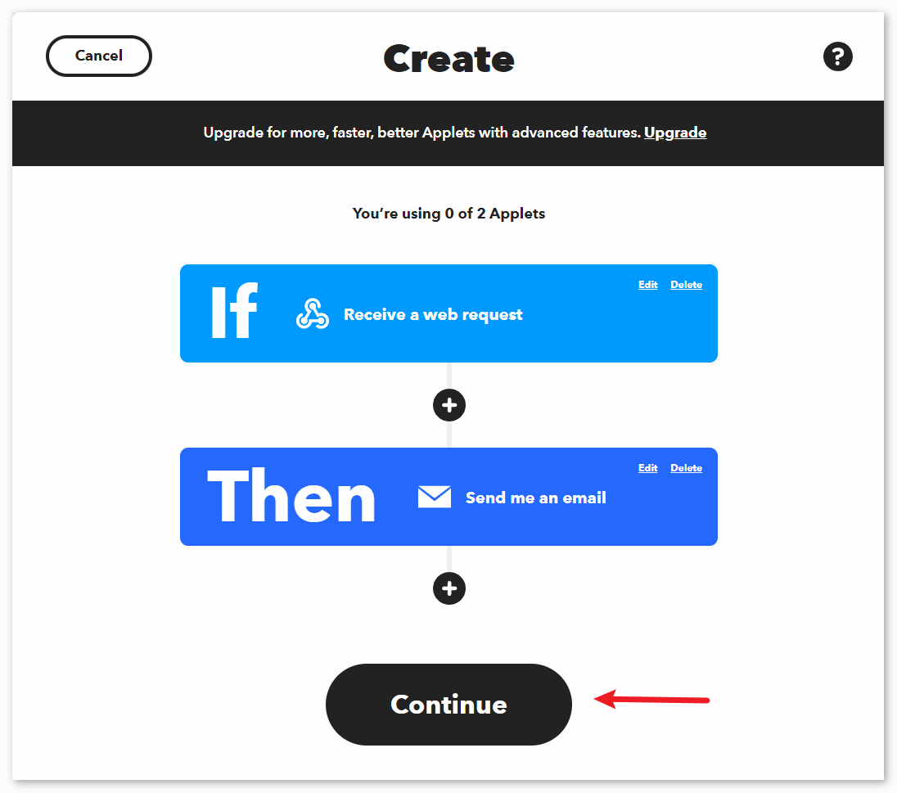
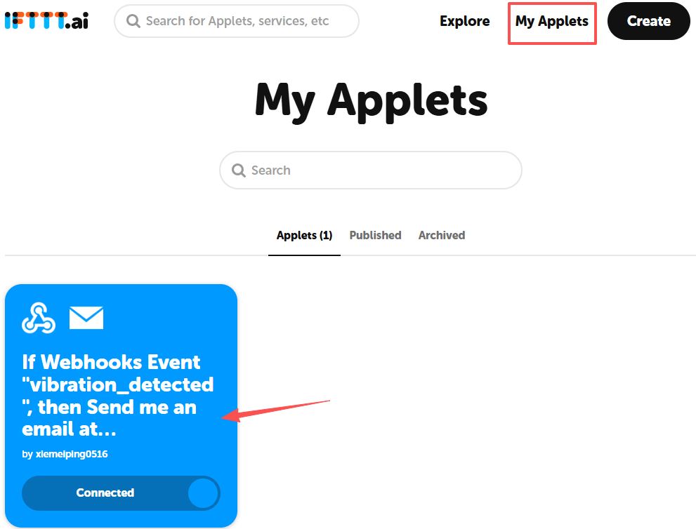
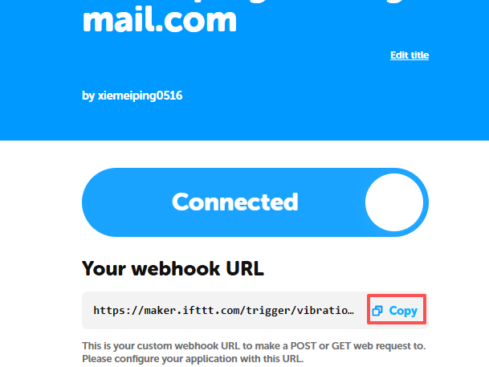
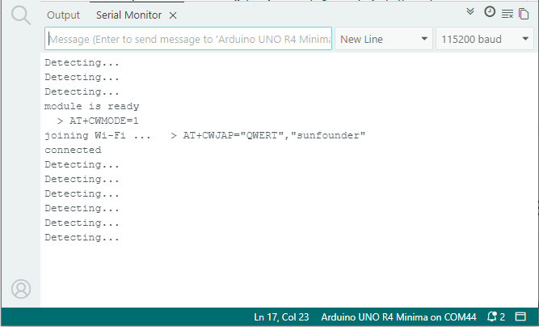

Note
Hello, welcome to the SunFounder Raspberry Pi & Arduino & ESP32 Enthusiasts Community on Facebook! Dive deeper into Raspberry Pi, Arduino, and ESP32 with fellow enthusiasts.
Why Join?
Expert Support: Solve real-life coding problems and technical challenges with our community and team.
Learn & Share: Exchange tips, tutorials, and projects to enhance your skills.
Exclusive Previews: Get early access to new product announcements and sneak peeks.
Festive Promotions and Giveaways: Take part in giveaways and holiday promotions.
👉 Ready to explore and create with us? Click [here] and join today!
4. Vibration Alert System with IFTTT
A vibration switch (SW-420) sits on the desk. When the desk is knocked, the board tells IFTTT what happened, and IFTTT sends you an email.
This project does not use Blynk. It sends a plain HTTP request straight to IFTTT, so
you can see what the module really does with an AT command such as AT+CIPSEND - the
same thing your browser does when you open a web page.
To keep your inbox calm, two alerts are always at least two minutes apart.
1. Build the Circuit
Note
The module draws a high current at start-up, so make sure the 9 V battery or an external power supply is plugged into the DC jack of the R4 Minima.


2. Configure IFTTT
IFTTT is a free service that connects apps together with a simple rule:
> If This happens, Then That happens.
Here we need two parts:
If This - someone shakes the sensor. IFTTT gives us a private web address that we can call from the board.
Then That - send an email. That is the action.

2.1 Sign up for IFTTT
Open https://ifttt.com in your browser and click Start building. Fill in the form to create an account.

Click start building.

Choose the Classic mode.



2.2 If This - the trigger
Click Add next to If This.

Search for webhook and click Webhooks.

Click Receive a web request. This is the service the board will call.

Set the Event Name to vibration_detected, then click Create trigger.
Note
This name becomes part of the address, so it has to match the
URLin the sketch. If you use another name here, change it there too.
2.3 Then That - the action
Click Add next to Then That to add an action.

Search for email and click Email.

Click Send me an email.

Write the subject and the body of the email.
For example:
Subject:
Detected vibration!!!Body:
Detected vibration, please confirm the situation promptly! {{OccurredAt}}
{{OccurredAt}}is replaced by IFTTT with the exact time the event happened, which is handy when you look at the mail the next morning.
Finish the wizard by following the screens below.



3. Run the Code
Open the
04-Vibration_alert_system.inofile under the path ofultimate-sensor-kit\code\iot_project_espc201\wifi\04-Vibration_alert_system, or copy this code into Arduino IDE.Type the name and password of your own Wi-Fi network.
String mySSID = "your_ssid"; String myPWD = "your_password";
Open the My Applets page of IFTTT and click the applet you just created.

Copy your webhook URL.

Paste the whole address IFTTT shows you into
URL- https:// and all, exactly as you copied it.String URL = "https://maker.ifttt.com/trigger/vibration_detected/with/key/xxxxxxxxxxxxxxxxxx";
You do not have to cut anything off. The sketch keeps only the part after the host name before it sends the request, because the module talks plain TCP to port 80.
Select Arduino UNO R4 Minima and the right port, then click Upload.
Open the Serial Monitor at 115200. After a few seconds you should read:
=== Vibration Alert System (IFTTT) === module is ready joining Wi-Fi ... connected Detecting...
If it says
FAILED (check ssid and password), the board cannot join your network - check the Wi-Fi name and password, and remember that the ESPC2-01 only works on 2.4 GHz networks.
Tap the sensor. The monitor answers with
Detected vibration!!! > AT+CIPMUX=0 > AT+CIPSTART="TCP","maker.ifttt.com",80 > AT+CIPSEND=118 request sent to IFTTT
and an email arrives within a few seconds.
Note
Knock it twice in a row: the second time only prints
An alert was sent recently, so this one is skipped.That is the two-minute rule at work, not a fault.


4. Code explanation
The serial port that talks to the module
The ESPC2-01 is not running this sketch - it works as a modem. The board sends it AT commands on D0/D1, which is
Serial1, a hardware port, so 115200 works without bit errors.#define EspSerial Serial1What you have to fill in
String mySSID = "your_ssid"; String myPWD = "your_password"; String myHOST = "maker.ifttt.com"; String myPORT = "80"; String URL = "https://maker.ifttt.com/trigger/vibration_detected/with/key/xxxxxxxxxx";
You copy the address the way IFTTT shows it, https:// and all, and the sketch converts it:
String urlPath() { String u = URL; u.replace("https://", ""); u.replace("http://", ""); int slash = u.indexOf('/'); return (slash >= 0) ? u.substring(slash) : "/"; }
myHOSTandmyPORTnever change: IFTTT always answers on port 80 ofmaker.ifttt.com. Only the path is personal, because it carries your key.Note
Why not send
https://straight to the module? HTTPS means TLS: the module would have to open a secure connection with certificates, which is a much longer AT sequence. IFTTT accepts the same request on plain port 80, so the short way is enough here.Vibration pin and the two-minute rule
unsigned long lastAlertTime = 0; const unsigned long postingInterval = 120000L; // 2 minutes const int sensorPin = 7;
The SW-420 gives a simple level: it goes HIGH while it shakes. Without the two-minute rule a single knock would fire dozens of emails.
espModuleInit() - wake the module up first
The module needs about a second to boot and prints its start-up log on the same wire. This function waits for the word
readyand then sendsATE0so the replies stop carrying a copy of the command you just sent.void espModuleInit() { unsigned long t0 = millis(); String buf; while (millis() - t0 < 5000) { while (EspSerial.available() && buf.length() < 512) { buf += (char)EspSerial.read(); if (buf.indexOf("ready") >= 0) t0 = millis() - 5000; } if (buf.indexOf("ready") >= 0) break; } while (EspSerial.available()) EspSerial.read(); EspSerial.print("ATE0\r\n"); delay(300); while (EspSerial.available()) EspSerial.read(); }
The
buf.length() < 512guard matters: without it a module that keeps talking would keep the inner loop busy for ever and the sketch would never reachsetup().at() - one AT command, with a time limit
String at(const String& cmd, unsigned long waitMs, const char* okMark, const char* errMark) { while (EspSerial.available()) EspSerial.read(); EspSerial.print(cmd); EspSerial.print("\r\n"); unsigned long t0 = millis(); String r; while (millis() - t0 < waitMs) { while (EspSerial.available() && r.length() < 512) r += (char)EspSerial.read(); if (okMark && r.indexOf(okMark) >= 0) break; if (errMark && r.indexOf(errMark) >= 0) break; } return r; }
Every command goes through this one function: it sends, collects the reply, and stops as soon as the expected answer - or an error - shows up. It always returns, so the board can never freeze on a missing
OK.setup() and loop()
void setup() { Serial.begin(115200); EspSerial.begin(115200); espModuleInit(); Serial.println("module is ready"); wifiOK = joinWiFi(); } void loop() { if (!wifiOK && millis() - lastRetry > 30000) { lastRetry = millis(); wifiOK = joinWiFi(); } ... delay(500); }
If the Wi-Fi is down at start-up, the sketch does not give up: it tries again every 30 seconds. That is why you can start the board before the router is ready.
sendAlert() - one HTTP request
String req = "GET " + URL + " HTTP/1.1\r\n"; req += "Host: maker.ifttt.com\r\n"; req += "Connection: close\r\n\r\n"; at("AT+CIPMUX=0", 1000, "OK", "ERROR"); at("AT+CIPSTART=\"TCP\",\"" + myHOST + "\"," + myPORT, 5000, "OK", "ERROR"); ... EspSerial.print("AT+CIPSEND="); EspSerial.print(req.length()); ... EspSerial.print(req);
Three AT commands do the job:
AT+CIPMUX=0- one connection at a time.AT+CIPSTART- open a TCP connection tomaker.ifttt.com:80.AT+CIPSEND=<length>- the module answers with>, and only then you send the text of the request. The length must be the exact number of characters, which is why the sketch measuresreq.length()instead of guessing.
The request itself is the same thing your browser sends: a line with the method and the path, one header, an empty line, and nothing else. IFTTT fires the applet as soon as it reads the path.